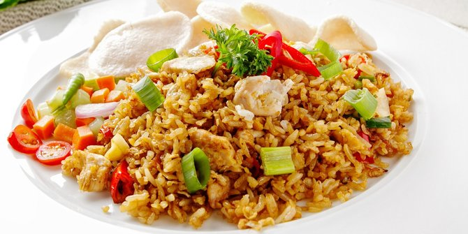
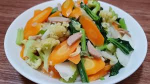
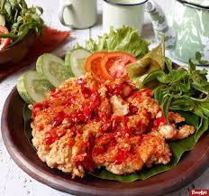
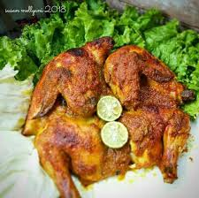

| 1 |
Resep Nasi Goreng |
- Piring Saji
- Wajan untuk menumis
- Sodet untuk mengaduk bumbu
- Ulekan/blender
- 1 piring nasi putih
- 1 sendok minyak goreng
- 3 buah siung bawang merah & 3 buah siung bawang (dihaluskan)
- 3 buah cabai besar (sesuai selera) (dihaluskan)
- 1 sendok teh garam dan 1/2 sendok teh gula
- 3 buah sosis ayam/sapi,daging ayam suwir,nugget atau kacang polong untuk menjadi ikan.
Ikannya bisa diganti dengan sesuai dengan selera
- panaskan wajan yang diberi minyak goreng
- tumis semua bahan yang sudah dihaluskan ke dalam wajan yang sudah panas
- masukkan nasi kedalam wajan yang berisi bumbu halus dengan sedikit ditambahkan garam dan gula,sayuran, sosis,kacang polong,atau snack pilus sesuai dengan selera
- aduk nasi hingga merata
- Angkat nasi goreng yang sudah jadi
- sajikan dalam piring dengan ditambahkan (sayur selada atau dengan kerupuk diatasnya sebagai hiasan)
|

|
|
| 2 |
Resep Mie Goreng |
- 500 gram mie kuning, cuci bersih, tiriskan
- 1 ikat sawi hijau, cuci bersih, potong
- 1 butir telur ayam, buat orak-arik
- 6 buah bakso sapi (varian isi sesuai dengan selera), iris tipis
- 1 buah tomat, bagi 8
- 1 batang daun bawang, iris tipis
- 4 sdm kecap manis
- 1 sdm saus tiram
- 1/2 sdt kaldu ayam bubuk
- Garam secukupnya
- Merica secukupnya
- Bumbu Yang Dihaluskan:
- 3 siung bawang merah
- 2 siung bawang putih
- air 2 liter
- Cara Membuat Mie Ayam
- Rebus air
- Tambahkan lada bubuk dan garam
- Tulang ayam secukupnya
- Haluskan bumbu yang terdiri dari bawang putih,bawang merah,ketumbar,kunyit,kemiri,dan jahe
- Tumis ayam yang telah direbus dengan bumb yang telah dihaluskan
- Tambahkan garam dan penyedap rasa secukupnya
|

|
|
| 3 |
Resep Capcay Kuah Bakso Sapi |
- 200 gram dada ayam, potong kecil
- 100 gram udang (bisa diganti lainnya sesuai dengan selera), kupas kulitnya
- 75 gram jamur kancing(bisa diganti lainnya sesuai dengan selera)
- 10 buah bakso,potong-potong
- 10 helai sawi hijau
- 5 helai sawi putih
- 1/2 batang bunga kol
- 2 buah wortel,potong tipis
- 3 batang daun bawang
- Garam secukupnya
- Merica secukupnya
- Bahan bumbu capcay kuah bakso sapi:
- 3 sendok makan saos tiram
- 3 sendok makan kecap ikan
- 1/2 bawang bombay
- 4 siung bawang merah, haluskan
- 3 siung bawang putih, haluskan
- 1/2 sendok makan merica bubuk
- 1 liter kaldu ayam (atau kaldu bubuk)
- 3 sendok makan minyak
- Pertama panaskan minyak kemudian tumis bawang merah, bawang putih dan bawang bombay hingga harum dan berubah warna
- Selanjutnya masukan daging ayam dan tumis hingga berubah warna menjadi kecoklatan
- Lalu masukan bakso dan juga udang hingga berubah warna, aduk hingga merata.
- Selanjutnya tambahkan kecap ikan, saus tiram,garam, gula dan juga merica. Aduk kembali hingga merata
- Lalu masukan semua sayuran, aduk hingga semua sayuran matang
- Cap cay kuah spesial siap untuk disajikan bersama dengan bahan pelengkap
|

|
|
| 4 |
Resep Ayam Geprek sambal bawang |
- 2 potong ayam; bagian paha dan dada ayam
- 1 butir telur
- 5 sendok tepung terigu
- 3 sendok tepung maizena
- 3 siung bawang putih
- Secukupnya merica
- Secukupnya garam
- Secukupnya minyak goreng
- 1 batang daun kemangi
- Sambal :
- 22 buah cabe rawit
- 2 siung bawang putih,digoreng
- garam secukupnya
- Masukkan ayam.Tambahkan bawang putih halus,merica,dan garam
- Remas-remas ayam,sampai bumbu tercampur rata dan teresap.Tinggalkan selama kurang lebih 2jam(semakin lama semakin baik, agar bumbu meresap pada ayam)
- Setelah Anda merasa bumbu telah meresap, masukkan 1 butir telur. Kocok hingga semua permukaan ayam terlumuri telur
- Siapkan tepung terigu dan tepung maizena,campurkan.Lalu masukkan ayam yang telah dilumuri telur kedalam badan ayam semua tertutup dengan tepung
- Setelah minyak goreng panas, masukkan ayam. Goreng ayam dengan api kecil agar ayam matang sampai didalamnya.Goreng sampai berubah warna menjadi kuning keemasan lalu balik perlahan.
- Tunggu sampai kedua sisi ayam matang dan berubah menjadi kuning keemasan.Lalu tiriskan.
- Bahan-bahan untuk Sambal :
- 3 siung bawang putih
- 5 cabai rawit (tingkat kepedasan bisa diatur sendiri)
- 1 sendok teh garam
- masukkan bawang putih yang telah di goreng, cabe, garam. Ulek sampai halus. Tambahkan 2 sendok minyak goreng panas bekas menggoreng ayam.
- Sambal diulek setengah halus,lalu masukkan ayam yang sudah jadi kedalam sambal
- Geprek ayam bersama dengan sambal
- Tambahkan kemangi diatas ayam geprek (jika tidak suka dengan kemangi tidak perlu diberi kemangi)
- Sajikan di piring saji dan siap dinikmati
|

|
|
| 5 |
Resep Ayam Bakar : |
- 1 ekor ayam berukuran kecil, potong menjadi 4 bagian,atau ukuran besar menjadi 6 bagian (sesuai selera),cuci sampai bersih dan sisihkan
- 2 lembar daun salam
- 3 sendok makan kecap manis(dapat ditambahkan jika ingin manis,sesuai selera)
- Air secukupnya untuk ungkep ayam
- 4 butir bawang merah (haluskan)
- 3 siung bawang putih (haluskan)
- 8 buah cabai merah keriting (haluskan)
- 1/2 sendok teh merica (haluskan)
- 1 ruas jari kunyit di bakar lalu dihaluskan
- 2 ruas jari jahe di geprek
- 2 ruas lengkuas di geprek
- Garam Secukupnya
- Gula Merah secukupnya
- 10 buah cabe rawit merah haluskan
- 2 (dua) buah jeruk nipis /limau ambil airnya,saring biji jeruk jangan sampai terbawa
- tambahkan 6 (enam) sendok makan kecap manis.
- Tumis bumbu – bumbu yang telah dihaluskan sampai kekuningan dan harum
- Masukkan Ayam yang telah dipotong dan dicuci bersih kedalam tumisan tersebut.Tambahkan air secukupnya sampai ayam terendam
- Masukkan Ayam yang telah dipotong dan dicuci bersih kedalam tumisan tersebut.Tambahkan air secukupnya sampai ayam terendam. masukkan daun salam dan kecap,biarkan masak hingga daging ayam empuk,dan kuah mengental.Angkat dan sisihkan
- Siapkan Bara arang untuk membakar ayam yang telah di ukep,bakar sampai permukaan kering dan jangan terlalu gosong
- Setelah ayam dirasa sudah cukup,angkat dan sajikan di piring saji dengan pinggiran piring diberi kemangi,irisan timun.
|

|
|
| 6 |
Resep Sate Ayam : |
- 250 gr daging ayam bagian dada
- 100 gr kacang tanah
- 200 ml air
- 3 sdm kecap manis
- Bumbu halus :
- 3 siung bawang putih
- 2 siung bawang merah
- 3 buah kemiri yg di sangrai
- 10 buah cabe rawit
- 1/2 sdt garam
- 1 sdm gula merah
- 1 lembar daun jeruk purut
- Taburan :
- secukupnya bawang merah mentah Irisan
- secukupnya cabe rawit Irisan
- Langkah :
- Bersihkan dan potong dadu daging ayam.Lumuri dengan garam sebanyak 1 sdt dan perasan jeruk nipis.Diamkan sebentar biar meresap
- Sangrai kacang tanah sampai matang
- Uleg kacang sampai halus dan berikan gula merah sebanyak 1 sdm
- Uleg bumbu halus, sama daun jeruknya
- Setelah itu masukan air. Masak sampai mendidih
- Setelah mendidih masukkan kacang yang telah di uleg tadi
- Masukan 3 sdm kecap, lalu masak sampai kental dengan api kecil. Koreksi rasa. Lalu angkat
- Ambil 3 sdm saus kacang tadi masukan kedalam mangkok. Tambahkan 1 sdm kecap dan 1 sdm air. Aduk sampai rata
- Tusuk daging ke tusuk sate
- Setelah itu celupkan bumbu kacang yang 3sdm tadi ke daging yang telah d tusuk. Diamkan didalam kulkas agar bumbu meresap kurang lebih 1 jam
|

|
|